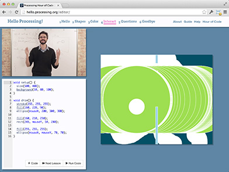

Play With Examples
Browse Tutorials
Processing is a programming language, development environment, and online community. Since 2001, Processing has promoted software literacy within the visual arts and visual literacy within technology. Initially created to serve as a software sketchbook and to teach computer programming fundamentals within a visual context, Processing evolved into a development tool for professionals. Today, there are tens of thousands of students, artists, designers, researchers, and hobbyists who use Processing for learning, prototyping, and production.
- » Free to download and open source
- » Interactive programs with 2D, 3D or PDF output
- » OpenGL integration for accelerated 3D
- » For GNU/Linux, Mac OS X, and Windows
- » Over 100 libraries extend the core software
- » Well documented, with many books available
Hello Processing Videos
This first look at Processing for total beginners is an introduction to programming in the context of the visual arts. Short video lessons introduce coding exercises that lead to designing an interactive drawing program. This experimental tutorial was created for Code.org's Hour of Code project for Computer Science Education Week.

- The http://t.co/IovrzKnUij #hourofcode begins today. Our contribution is the updated "Hello Processing" tutorial. http://t.co/TJG9ZwL9rz about 5 days ago
- OH "The goals of Processing 3 are to make it easier to use /and/ more powerful." about 7 days ago
- #Processing has started a web ring. Link between @ProcessingOrg, @p5xjs, and Processing.py from http://t.co/gEklxJ8YFY Thanks @alignedleft! about 24 days ago
» Github
- benfry committed "splash screen notes" about a day ago
- benfry committed "Merge pull request #3005 from kfeuz/splashscreen Adds splash screen for linux" about a day ago
- kfeuz committed "Added splash screen for linux" about a day ago
- benfry committed "add reference.zip download to the assemble process" about 18 days ago
Exhibition
Filament Sculptures
by Lia
Fall in Love - Phantogram
by Timothy Saccenti and Joshua Davis

Keyflies
by Miles Peyton

Petting Zoo
by Minimaforms
To see more of what people are doing with Processing, check out these sites:
» CreativeApplications.Net
» OpenProcessing
» Vimeo
» Flickr
» Studio Sketchpad
To contribute to the development, please visit Processing on GitHub to read instructions for downloading the code, building from the source, reporting and tracking bugs, and creating libraries and tools.
Partners
» Fathom» UCLA Arts Software Studio
» NYU ITP
Mailing List
If you are interested in receiving updates about Processing, submit your email through this form. Your email will only be used to send infrequent updates about Processing. It will not be sold or shared.